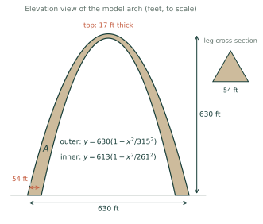
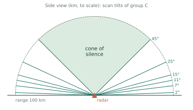

Cylindrical: \(dV=r\,dr\,d\theta\,dz\). Spherical: \(x=\rho\sin\phi\cos\theta,\ y=\rho\sin\phi\sin\theta,\ z=\rho\cos\phi\), with \(\rho\ge0\) and \(0\le\phi\le\pi\) measured down from the positive \(z\)-axis
For \(f\ge0\): \(\iint_{\mathbb R^2}f\,dA=\lim_{n\to\infty}\iint_{D_n}f\,dA\) for any regions \(D_n\) that exhaust the plane
Entering answers
Type numbers or formulas: fractions, decimals, pi, e, sqrt(...), sin(...), cos(...), exp(...), log(...). Use ^ for powers and radians for angles; separate vector components with commas.
Any equivalent form is accepted: 3/2, 1.5, and 6/4 are all the same answer, and so are (4/3)pi r^3 and 4 pi r^3/3.
Decimals must be correct to two decimal places (answers smaller than 0.1 need two significant digits). Exact forms such as 6pi sqrt(37) are always fine.
LaTeX such as \frac{1}{2}, \sqrt{2}, \pi, and \phi also works. A potential function may differ from ours by a constant. Units are shown beside each box.
Hints and solutions are built into the page, and nothing you type is sent anywhere: your answers and notes stay in this browser. This is an ungraded practice site.
The Gateway Arch in St. Louis is a stainless-steel arch 630 feet tall and just as wide. Each leg’s cross-section is an equilateral triangle, widest at the ground and narrowing toward the top. An object’s center of mass is its balance point: the average position of all its mass. For a thin curved band like the arch, that point need not lie in the material at all. Where does the arch balance, and how far down do the thick bases of its legs pull that point?
Building the model
1From the real world
Outer width, outside of one leg to outside of the other: \(630\) ft
Maximum height: \(630\) ft
Leg cross-section: an equilateral triangle
Side of that triangle: \(54\) ft at the base and \(17\) ft at the top
The arch is a flat band seen from the front, with all its mass in one plane. This ignores the depth of the legs; part (c) puts it back roughly through the density.
The outer edge is the parabola \(y=630(1-x^2/315^2)\), which matches the published width and height. The real design curve is different, so the shape is close but not exact.
The inner edge is the parabola \(y=613(1-x^2/261^2)\), chosen so the legs are 54 ft wide at the ground and 17 ft thick at the top. In between, the thickness is whatever the two parabolas give.
In part (c), the density is proportional to leg thickness, falling linearly from 54 at \(y=0\) to 17 at \(y=630\), because a thicker leg has more material behind each square foot of the front view. This is only a rough stand-in for the real taper.
3So the model is
The arch is the flat region \(A\) between the two parabolas, above \(y=0\); \(x\) (ft) is the horizontal distance from the arch’s center line and \(y\) (ft) is the height above the ground
In part (a), \(h\) (ft) is the height and \(w\) (ft) the half-width of a single parabolic region
Density \(\delta\) (relative units, “the thickness weight”): uniform in part (b); \(\delta=54-\tfrac{37}{630}y\) in part (c)

The model arch \(A\), in feet: the band between the outer parabola \(y=630(1-x^2/315^2)\) and the inner parabola \(y=613(1-x^2/261^2)\). Right: a leg’s cross-section at the ground, an equilateral triangle with 54 ft sides. Notice how much empty space the band encloses.
First, on paper
With your group, on paper or a shared whiteboard, work down this list before typing any answers. Items marked “Before (b)” set up that part; “After (c)” items check it.
Sketch \(A\) and mark where the band is thick and where it is thin. Explain, without integrating, why \(\bar x=0\) for both densities.
Locate the centroid of a leg’s cross-section, the equilateral triangle with vertices \((0,0)\), \((54,0)\), \((27,27\sqrt3)\) (ft), by averaging the vertices, with no integrals.
Before (b): Describe \(A\) as (region under the outer parabola) minus (region under the inner parabola), and explain why its mass and moment are differences.
Before (c): Predict whether weighting by leg thickness moves \(\bar y\) up or down from part (b). Why?
After (c): Mark both values of \(\bar y\) on your sketch, and explain how a body can balance at a point where it has no material.
Whiteboard kit ↓One image with this problem’s figure, model, checklist, formulas, and parts (a)–(c). Paste it, or crop pieces of it, onto your group’s shared whiteboard.
aStart with one parabolic region of uniform density: the region under \(y=h(1-x^2/w^2)\) and above \(y=0\), with height \(h\) and half-width \(w\) in feet. Enter the height \(\bar y\) of its center of mass, in feet above the ground, as a function of h and w.
A step in the right direction
One thin strip at \(x\): its area is its height times \(dx\), and it balances halfway up, so it adds (area)\(\times\)(half its height) to \(M_x\).
bUsing the mass and moment from part (a), find \(\bar y\), in feet above the ground, for the uniform arch region \(A\).
A step in the right direction
The band \(A\) is the outer region with the inner region cut out, so its mass and its moment \(M_x\) are (outer) minus (inner), each from part (a)’s formulas.
cNow weight the arch by its leg thickness, so it is heavier where the legs are thicker: density \(\delta=54-\tfrac{37}{630}y\). Find \(\bar y\) for \(A\), in feet above the ground.
A step in the right direction
The density \(\delta=54-\tfrac{37}{630}y\) falls in a straight line from 54 at the ground to 17 at the top, so the low parts of \(A\) count more in both \(M\) and \(M_x\).
View full solution +
Follow the reasoning
Symmetry: the reflection \(x\mapsto-x\) maps \(A\) to itself and leaves \(\delta\) unchanged, because \(\delta\) depends only on \(y\). So \(x\delta\) is odd in \(x\), its integral over \(A\) is zero, and \(\bar x=0\) for both densities. Triangle centroid: averaging the vertices gives \(\big(\tfrac{0+54+27}{3},\tfrac{0+0+27\sqrt3}{3}\big)=(27,9\sqrt3)\approx(27,15.6)\) ft, one third of the way up from the base.Left: for every bit of mass at \(x\) there is a matching bit at \(-x\), so \(\bar x=0\). Right: the triangle’s centroid is the average of its vertices, \((27,9\sqrt3)\) ft.
One parabolic region: \(M=\int_{-w}^{w}h(1-\tfrac{x^2}{w^2})\,dx=\tfrac43hw\) and \(M_x=\int_{-w}^{w}\tfrac12h^2(1-\tfrac{x^2}{w^2})^2\,dx=\tfrac{8}{15}h^2w\), so \(\bar y=\tfrac25h\), whatever the width \(w\).
Arch as a difference: \(A\) is the outer region with the inner region removed, so its mass and moment are differences. This gives \(M_A=\tfrac43(630\cdot315-613\cdot261)=51{,}276\) ft2 and \(M_{x,A}=\tfrac8{15}(630^2\cdot315-613^2\cdot261)\approx1.4372\times10^7\) ft3, so \(\bar y\approx280.3\) ft.
Thickness weighting: the legs are thickest at the ground, so the weighting favors low points and \(\bar y\) should drop. On each region, \(\iint y^k\,dA\) equals \(\tfrac43wh,\ \tfrac8{15}wh^2,\ \tfrac{32}{105}wh^3\) for \(k=0,1,2\). Subtracting the inner region, \(M=\iint_A(54-\tfrac{37}{630}y)\,dA\) and \(M_x=\iint_Ay(54-\tfrac{37}{630}y)\,dA\) give \(\bar y\approx229.8\) ft, about 50 ft lower than in part (b).
Interpretation: at \(x=0\) the steel lies between 613 and 630 ft, so both balance points, \((0,280.3)\) and \((0,229.8)\) ft, sit in the empty space under the arch. The center of mass is an average of positions, and the average of points on a curved band can lie off the band.Both balance points, \(\bar y\approx280.3\) ft (uniform) and \(\bar y\approx229.8\) ft (thickness-weighted), lie in the empty space under the arch, well below the steel at 613 to 630 ft.
Reconciliation: both heights lie between 0 and 630 ft, as an average height must, and the thickness weighting lowered \(\bar y\), as the thick bases suggest. The assumption that matters most is how the mass is spread along the band: changing only the density moved \(\bar y\) by about 50 ft.
Final answers
a.\(\frac{2 h}{5}\) ft
b.\(\frac{5988398}{21365}\) ft
c.\(\frac{406441825784}{1768433009}\) ft
Discussion
Down. The concrete fills the legs only from the ground up to 300 ft, where the legs are thickest, so its own balance point is well below the arch’s (about 230 to 280 ft in the model), and adding it pulls the combined balance point lower. A lower center of mass makes a structure harder to tip over, which is one reason a builder wants to know where the weight is.
Think it through
The NPS also says there is concrete between the skins of the legs up to a height of 300 ft. Would that concrete move the balance point up or down, and why would an arch builder care where the weight is?
Saved on this browser · Discussion prompt, not automatically graded
Problem 02Core
Weighing Earth’s core without digging
No one can dig to the center of Earth, 6371 km below our feet. Yet two numbers measured from outside show that the center is far denser than the surface. One is Earth’s mass. The other is its moment of inertia, which measures how hard it is to change a body’s spin; it is small when the mass sits close to the spin axis. Astronomers find it from how Earth’s spin axis responds to the pull of the Sun and Moon. How dense must Earth’s center be to match both numbers?
Building the model
1From the real world
Mean radius \(R=6371\) km
Mass \(M=5.9722\times10^{24}\) kg
Mean density \(5513\) kg/m3 (converted: \(5.513\) g/cm3)
Moment-of-inertia factor \(I/(MR^2)=0.3308\), measured from how Earth’s spin axis responds to the Sun and Moon
Earth is a ball whose density depends only on the distance \(\rho\) from the center. This lets two outside measurements say something about the inside, but it ignores any differences from place to place at the same depth.
The density is a quadratic function of \(\rho\), so it has two unknowns that the two measurements can fix. The real Earth has distinct layers, which a smooth quadratic cannot show.
3So the model is
Density \(\delta(\rho)=a-b\rho^2\) (g/cm3), with \(\rho\) the distance from the center in Earth radii (\(0\le\rho\le1\)); \(a\) is the density at the center and \(b\) is how much lower it is at the surface, both in g/cm3
\(M\) is the mass and \(I\) the moment of inertia about the spin axis (the \(z\)-axis): each bit of mass times its squared distance from the axis, added up
\(I/(MR^2)\), the moment-of-inertia factor (no units), compares \(I\) with the value it would have if all the mass sat at distance \(R\) from the axis
Earth cut along its spin axis \(z\), as a ball whose density depends only on \(\rho\); darker shading means denser. A small spherical box has edges \(\Delta\rho\), \(\rho\,\Delta\phi\), and \(\rho\sin\phi\,\Delta\theta\), with the third edge pointing out of the page.
First, on paper
With your group, on paper or a shared whiteboard, work down this list before typing any answers. Items marked “Before (b)” set up that part; “After (c)” items check it.
Sketch a cut through the spin axis, shade where \(a-b\rho^2\) is largest, and mark where a kilogram of material adds the most to \(I\).
Explain why a small spherical box with sides \(\Delta\rho\), \(\Delta\phi\), \(\Delta\theta\) has edges \(\Delta\rho\), \(\rho\,\Delta\phi\), and \(\rho\sin\phi\,\Delta\theta\), and derive the volume factor \(\rho^2\sin\phi\).
Explain why, for a density that depends only on \(\rho\), every mass or moment integral over the ball reduces to one \(\rho\)-integral times an angular factor.
Before (b): Predict whether a ball that is densest at the center has a bigger or smaller \(I/(MR^2)\) than a uniform ball. Why?
After (b): Check your prediction: find \(I/(MR^2)\) for a uniform ball and compare it with the measured 0.3308. What does that say about where Earth’s mass is?
Check the published data: compute the work per kilogram to lift a mass from the surface to infinity, \(\int_R^\infty GM/r^2\,dr\), explain why this improper integral converges, and recover the escape speed.
Whiteboard kit ↓One image with this problem’s figure, model, checklist, formulas, and parts (a)–(c). Paste it, or crop pieces of it, onto your group’s shared whiteboard.
aMeasure distances in Earth radii, so Earth is the ball \(\rho\le1\). Enter the mass of the ball with density \(\delta=a-b\rho^2\) as a function of a and b (in units of g/cm³ times one Earth radius cubed).
A step in the right direction
Cut the ball into thin shells: every point of the shell at radius \(\rho\) has the same density \(a-b\rho^2\), so only one \(\rho\)-integral is left after the angles.
bEnter the model’s moment-of-inertia factor \(I/(MR^2)\), a pure number, as a function of a and b, where \(I\) is the moment of inertia about the spin axis (the \(z\)-axis) and \(R=1\).
A step in the right direction
The moment of inertia weights each bit of mass by its squared distance to the spin axis, \((\rho\sin\phi)^2\), not by \(\rho^2\).
cChoose a and b so that the model matches the published mean density, 5513 kg/m³ = 5.513 g/cm³, and the published moment-of-inertia factor, 0.3308. What central density a does the model give, in g/cm³?
A step in the right direction
The factor depends only on \(k=b/a\): find where the curve meets the measured \(0.3308\), then use the mean density to get \(a\).
View full solution +
Follow the reasoning
Volume factor: the box’s edges are a radial step \(\Delta\rho\), an arc \(\rho\,\Delta\phi\) of a circle of radius \(\rho\), and an arc \(\rho\sin\phi\,\Delta\theta\) of a circle of radius \(\rho\sin\phi\) (the distance to the \(z\)-axis). Multiplying them gives \(dV=\rho^2\sin\phi\,d\rho\,d\phi\,d\theta\). For a density that depends only on \(\rho\), the angles separate and contribute \(\int_0^{2\pi}\!\int_0^\pi\sin\phi\,d\phi\,d\theta=4\pi\).
Mass and moment: \(M=4\pi\int_0^1(a-b\rho^2)\rho^2\,d\rho=4\pi(\tfrac a3-\tfrac b5)\). The squared distance to the spin axis is \(\rho^2\sin^2\phi\), so \(I=\int_0^{2\pi}\!\int_0^\pi\!\int_0^1(a-b\rho^2)\rho^4\sin^3\phi\,d\rho\,d\phi\,d\theta=\tfrac{8\pi}{3}(\tfrac a5-\tfrac b7)\), which gives \(\dfrac{I}{MR^2}=\dfrac23\cdot\dfrac{a/5-b/7}{a/3-b/5}\).
Uniform check: a uniform ball (\(b=0\)) gives \(I/(MR^2)=0.4\). A ball that is densest at the center keeps more of its mass near the axis, so its factor is smaller, as predicted. Earth’s \(0.3308\) is smaller than \(0.4\), so its mass is concentrated toward the center.
Fitting the data: with \(k=b/a\), the equation \(\tfrac23(\tfrac15-\tfrac k7)=0.3308(\tfrac13-\tfrac k5)\) gives \(k\approx0.7933\). The mean density is \(M/V=a(1-\tfrac35k)\), so \(a=5.513/(1-0.6k)\approx10.5\) g/cm3 at the center and \(a(1-k)\approx2.2\) g/cm3 at the surface. A center about five times denser than the surface points to a dense core.The fitted model \(\delta=a(1-k\rho^2)\) with \(k\approx0.793\): about 10.5 g/cm3 at the center and 2.2 g/cm3 at the surface, around the published mean of 5.513 g/cm3.
Escape check: \(\int_R^\infty\dfrac{GM}{r^2}\,dr=\lim_{T\to\infty}\Big[-\dfrac{GM}{r}\Big]_R^T=\dfrac{GM}{R}\approx62.6\) km2/s2, that is, about \(6.26\times10^7\) J per kilogram. It is finite because the exponent 2 is greater than 1. Setting \(\tfrac12v^2=GM/R\) gives \(v=\sqrt{2\times398{,}600/6371}\approx11.19\) km/s, matching NASA’s 11.186 km/s.The work per kilogram to escape is the whole area under \(GM/r^2\) from \(R\) out to infinity. It is finite, \(GM/R\approx62.6\) km2/s2, because the pull falls like \(r^{-2}\).
Reconciliation: the model matches the mean density and the factor 0.3308 by construction, and the escape integral reproduces NASA’s escape velocity from the published \(GM\) and radius. Both the central and surface densities are positive, and the center, about 10.5 g/cm3, is roughly twice the mean. The assumption that matters most is the smooth quadratic: two numbers can fix only two parameters, so a layered profile with the same mass and moment could have a different central density.
No. If the pull per kilogram fell like \(1/r\), the work to reach distance \(T\) would grow like \(\ln(T/R)\), without bound, so no finite launch speed would be enough. The deciding fact is that \(\int_1^\infty r^{-p}\,dr\) converges exactly when \(p>1\); gravity’s \(p=2\) is what makes escape possible.
Think it through
Suppose gravity weakened like 1/r instead of 1/r². Could anything escape Earth? Which one-variable convergence fact decides?
Saved on this browser · Discussion prompt, not automatically graded
Finland’s weather radars scan the sky by turning their antennas in full circles, tilting up a little after each turn. The tilt above the horizon is called the elevation angle. In the Finnish schedule the steepest full-circle scan has a 45° elevation, so these scans never sample the air inside an upside-down cone directly above each radar. This blind region is called the cone of silence. How much air does the cone of silence hide, how high is its balance point, and what share of the sky within the radar’s 100 km range is that? Would a different top tilt move the balance point?
Building the model
1From the real world
Highest elevation angle of the full-circle scans in the Finnish schedule: \(45^\circ\) (scan group C)
The ground is flat and the beams are straight lines. Near the radar, where the blind cone is, this matters little; it is least accurate far out at low tilts, where Earth’s curve matters.
Each beam is treated as a line with no width. Real radar beams spread out a little, which would make the true blind cone slightly narrower.
3So the model is
The radar sits at the origin; \(z\) (km) is the height above it, \(r\) (km) the horizontal distance from it, and \(\theta\) the direction around it
Blind region (cone of silence): the points above the steepest beam, \(z\ge\sqrt{x^2+y^2}\); in parts (a) and (b) it is cut off at height \(h\) (km)
Part (c): the blind points within range \(100\) km of the radar, \(\rho\le100\), where \(\rho\) (km) is the straight-line distance from the radar

Side view of the Finnish scan group C (tilts 2°–45°, range 100 km). The shaded cone above the steepest, 45° beam is never sampled by these scans; in the model it is \(z\ge\sqrt{x^2+y^2}\).
First, on paper
With your group, on paper or a shared whiteboard, work down this list before typing any answers. Items marked “Before (b)” set up that part; “After (c)” items check it.
Sketch a side view and shade the blind region below height \(h\). Describe it in cylindrical coordinates with \(r\) innermost, then with \(z\) innermost.
After (a): Check your volume against the cone volume \(\tfrac13\pi R^2h\), where \(R\) is the radius of the cone’s top.
Before (b): Predict whether \(\bar z\) lies above or below \(h/2\). Why?
After (b): For any top tilt \(\alpha\) (cone \(z=r\tan\alpha\), \(R=h\cot\alpha\)), show that \(\bar z\) does not depend on \(R\).
Before (c): Write the cone \(z=\sqrt{x^2+y^2}\) as an equation in \(\phi\), and describe the blind region within 100 km in spherical coordinates.
Explain why one radar sample’s volume, \(\Delta\rho\) long and \(\Delta\phi\) by \(\Delta\theta\) wide, grows like \(\rho^2\).
Whiteboard kit ↓One image with this problem’s figure, model, checklist, formulas, and parts (a)–(c). Paste it, or crop pieces of it, onto your group’s shared whiteboard.
aWith the 45° top tilt, find the volume of the blind region below height \(h\), with \(h\) in km. Enter it, in km³, as a function of h.
A step in the right direction
With a \(45^\circ\) top tilt, the horizontal slice at height \(z\) is a disk \(0\le r\le z\); stack the slices from \(z=0\) to \(z=h\).
bTreat the blind region below height \(h\) as a solid of uniform density. Enter the height \(\bar z\) of its center of mass, in km, as a function of h.
A step in the right direction
The slice area \(\pi z^2\) grows with height, so the upper half of the cone holds much more volume than the lower half. Weight each height \(z\) by its slice area.
cWithin range 100 km, what fraction of the volume of the half-ball of sky above the radar (\(\rho\le100\) km, \(z\ge0\)) lies in the blind cone? Enter a number between 0 and 1.
A step in the right direction
Both regions have \(0\le\rho\le100\) and \(0\le\theta\le2\pi\); only the \(\phi\)-limits differ. The factor \(\sin\phi\) in \(dV\) is small near the axis, so the blind cone holds less than its angle suggests.
View full solution +
Follow the reasoning
Blind region: at a \(45^\circ\) top tilt the blind region is \(z\ge\sqrt{x^2+y^2}\), that is, \(r\le z\). With \(r\) innermost: \(0\le\theta\le2\pi\), \(0\le z\le h\), \(0\le r\le z\). With \(z\) innermost: \(0\le\theta\le2\pi\), \(0\le r\le h\), \(r\le z\le h\).
Volume: \(V=\int_0^{2\pi}\!\int_0^h\!\int_0^z r\,dr\,dz\,d\theta=\tfrac{\pi h^3}{3}\) km3, which matches \(\tfrac13\pi R^2h\) with \(R=h\).
Center of mass: \(\bar z=\dfrac{\int_0^h z\cdot\pi z^2\,dz}{\pi h^3/3}=\dfrac{3h}{4}\), above \(h/2\) because the cone widens upward, so most of its volume is high. For a top tilt \(\alpha\) the slice at height \(z\) has area \(\pi z^2\cot^2\alpha\). The factor \(\cot^2\alpha\) (equivalently \(R^2/h^2\)) cancels, so \(\bar z=3h/4\) for every \(\alpha\) and every \(R\).Whatever the top tilt, the slice areas are proportional to \(z^2\), so the balance point is at \(\bar z=3h/4\), above \(h/2\), for every cone.
Spherical description: \(z=\sqrt{x^2+y^2}\) becomes \(\rho\cos\phi=\rho\sin\phi\), so \(\phi=\pi/4\). The blind region within 100 km is \(0\le\rho\le100\), \(0\le\phi\le\pi/4\), \(0\le\theta\le2\pi\), with volume \(V=\tfrac{2\pi}{3}100^3(1-\tfrac{\sqrt2}{2})\approx6.1\times10^5\) km3. That is a fraction \(1-\tfrac{\sqrt2}{2}\approx0.293\) of the half-ball.The blind share of the half-ball is \(1-\cos(\pi/2-\alpha)=1-\sin\alpha\) for a top tilt \(\alpha\); at \(45^\circ\) it is \(1-\tfrac{\sqrt2}{2}\approx0.293\). Steeper top scans shrink it quickly.
Sample volume: a sample has edges \(\Delta\rho\), \(\rho\,\Delta\phi\), and \(\rho\sin\phi\,\Delta\theta\), so its volume is about \(\rho^2\sin\phi\,\Delta\rho\,\Delta\phi\,\Delta\theta\). At 100 km a sample is 100 times larger than at 10 km, so the radar averages over far more air at long range.
Reconciliation: every answer is positive, and the fraction lies between 0 and 1. Within 100 km the cone hides about \(6.1\times10^5\) km3, nearly 30 percent of the sky above the radar, but below a height of 10 km it holds only \(\pi\cdot10^3/3\approx1050\) km3. Flat ground and straight beams matter little this close to the radar; the answers are far more sensitive to the top tilt. For a tilt \(\alpha\) the volume below \(h\) is \(\tfrac13\pi h^3\cot^2\alpha\), so a steeper top scan shrinks the cone quickly, while \(\bar z=3h/4\) stays the same.
Final answers
a.\(\frac{\pi h^{3}}{3}\) km3
b.\(\frac{3 h}{4}\) km
c.\(1 - \frac{\sqrt{2}}{2}\)
Discussion
Because the blind cone sits directly over the radar, a radar beside a city cannot see the storms right above the city: with a 45° top tilt, the cone is 20 km across at a height of 10 km. Neighboring radars see the same air from the side at low tilts, so radars spaced so that each blind cone lies inside the others’ coverage leave no gap.
Think it through
Most weather happens below about 10 km. Why does the blind cone matter more for a radar beside a city than for one far from people, and how can a network of overlapping radars fill it?
Saved on this browser · Discussion prompt, not automatically graded
Lick Observatory, the University of California’s mountain-top observatory near San Jose, needs dark skies. In a 1977 paper, Lick astronomer Merle Walker reported how much the lights of Salinas brightened the night sky at sites at different distances from the city. He found that this sky glow fades with distance \(D\) like \(D^{-2.5}\). Astronomers also measure a star by adding up all the light in its blurred image on the camera. Both are improper integrals: integrals over a region that never ends, or of a function that blows up. When does adding up light over an endless region give a finite total, and how much does a wider dark zone around the observatory cut the glow?
Building the model
1From the real world
Walker (1977), published law: sky glow at \(45^\circ\) altitude toward Salinas falls with distance as \(D^{-2.5}\)
Measured visual glow \(10.5\) km from Salinas: \(1.91\) (natural sky \(=1\))
Measured visual glow \(16.9\) km from Salinas: \(0.59\) (natural sky \(=1\))
A star’s image on the camera has brightness \(e^{-(x^2+y^2)}\), in units chosen so the image width is 1. This bell shape is an idealization chosen because it can be integrated exactly.
City lights are spread evenly over the plane outside a dark circle of radius \(a\) around the observatory, and their glows add. Real lights cluster in towns, so this model shows trends, not exact brightness.
Each patch of lights adds glow that falls off like Walker’s law, as if his measured falloff for a whole city held for every patch.
3So the model is
Star: total light \(=\iint_{\mathbb R^2}e^{-(x^2+y^2)}\,dA\) (arbitrary units)
Glow at the observatory \(\propto\iint_{x^2+y^2\ge a^2}(x^2+y^2)^{-b}\,dA\), where \(a\) (km) is the dark-zone radius and \(2b\) is the falloff exponent; \(2b=2.5\) for Walker’s law
Walker’s 1977 measurements of sky glow toward Salinas (filled dots: visual; open circles: blue) on log–log axes, with a line \(\propto D^{-2.5}\). On these axes a power law is a straight line, here with slope \(-2.5\).
First, on paper
With your group, on paper or a shared whiteboard, work down this list before typing any answers. Items marked “Before (b)” set up that part; “After (c)” items check it.
Sketch the dark circle and mark where \((x^2+y^2)^{-b}\) is large and where it is small. Check Walker’s law on his 10.5 km and 16.9 km rows.
After (a): Camera pixels add up light over squares \([-s,s]^2\). Sandwich each square between two disks to show the limit is the same, say why switching exhaustions is legal here, and factor the square integral to find \(\int_{-\infty}^\infty e^{-x^2}dx\).
After (b): Redo part (b) on the punctured disk \(0<x^2+y^2\le1\). For which \(b\) does it converge, and to what? Show that \(b=1\) diverges at both ends.
Compare with \(\int_0^1x^{-p}dx\) and \(\int_1^\infty x^{-p}dx\), and complete: \(1/|\mathbf x|^s\) is integrable near the origin of \(\mathbb R^n\) exactly when \(s<\underline{\quad}\). Does \((x^2+y^2)^{-3/4}\) converge on the punctured disk, outside the unit disk, both, or neither?
Before (c): Predict whether growing the dark zone from 10 km to 40 km in radius cuts the glow by more or less than a factor of 4. Why?
Whiteboard kit ↓One image with this problem’s figure, model, checklist, formulas, and parts (a)–(c). Paste it, or crop pieces of it, onto your group’s shared whiteboard.
aA star’s image on the camera has brightness \(e^{-(x^2+y^2)}\) (arbitrary units, with \(x\) and \(y\) measured in image widths). Enter the light collected inside a circular aperture of radius \(r\) centered on the star, as a function of r.
A step in the right direction
Add up thin rings: the ring at \(\rho\) has area about \(2\pi\rho\,d\rho\) and brightness \(e^{-\rho^2}\). The light inside the aperture is the shaded area.
bSuppose city lights are spread evenly over the plane outside a dark circle of radius 1 around the observatory, and the glow from lights at distance \(D\) is proportional to \(D^{-2b}\). For \(b>1\), enter \(\iint_{x^2+y^2\ge1}(x^2+y^2)^{-b}\,dA\) as a function of b.
A step in the right direction
In polar coordinates each ring at radius \(r\) adds \(r^{-2b}\cdot2\pi r\,dr\). Integrate from \(1\) to \(T\), then let \(T\to\infty\).
cUse Walker’s law, \(2b=2.5\). If the dark zone around the observatory grows from radius 10 km to 40 km, what is the ratio (new glow)/(old glow) for the evenly spread lights?
A step in the right direction
Growing the dark zone removes only the lights between 10 and 40 km; all the lights beyond 40 km still shine. Compare the two tails using part (b) with inner radius \(a\).
View full solution +
Follow the reasoning
Data check: Walker’s law predicts the ratio \((16.9/10.5)^{2.5}\approx3.29\) between the two rows, and the table gives \(1.91/0.59\approx3.24\), so the law fits these rows well.
Disk exhaustion: \(\iint_{D_r}e^{-(x^2+y^2)}dA=2\pi\int_0^re^{-\rho^2}\rho\,d\rho=\pi(1-e^{-r^2})\), which tends to \(\pi\) as \(r\to\infty\).
Square exhaustion: the square \([-s,s]^2\) contains the disk of radius \(s\) and sits inside the disk of radius \(\sqrt2s\). Because the integrand is positive, each square integral lies between \(\pi(1-e^{-s^2})\) and \(\pi(1-e^{-2s^2})\), and both bounds tend to \(\pi\). Switching exhaustions is legal because the integrand is positive; for integrands that change sign it can fail. On a square, \(\iint e^{-x^2}e^{-y^2}dA=\big(\int_{-s}^se^{-x^2}dx\big)^2\), so \(\int_{-\infty}^\infty e^{-x^2}dx=\sqrt\pi\).The square \([-s,s]^2\) sits between the disks of radius \(s\) and \(\sqrt2s\), so its light is squeezed between \(\pi(1-e^{-s^2})\) and \(\pi(1-e^{-2s^2})\), and all three tend to \(\pi\).
Power laws in the plane: outside the unit disk, \(2\pi\int_1^Tr^{1-2b}dr=\dfrac{2\pi}{2-2b}(T^{2-2b}-1)\), which tends to \(\dfrac{\pi}{b-1}\) for \(b>1\) and to \(\infty\) for \(b<1\). On the punctured disk, \(2\pi\int_\varepsilon^1r^{1-2b}dr\to\dfrac{\pi}{1-b}\) for \(b<1\) and diverges for \(b>1\). At \(b=1\) the integrals are \(2\pi\ln T\) and \(2\pi\ln(1/\varepsilon)\), so they diverge at both ends.
Thresholds: in one variable, \(\int x^{-p}dx\) converges near 0 when \(p<1\) and at infinity when \(p>1\). In \(\mathbb R^n\) the volume factor \(r^{n-1}\) turns \(1/r^s\) into \(r^{n-1-s}\), so the threshold is \(s<n\) near the origin and \(s>n\) at infinity. For \((x^2+y^2)^{-3/4}=r^{-3/2}\), \(s=1.5<2\), so the integral converges on the punctured disk (to \(4\pi\)) but not outside.
Dark zone: with inner radius \(a\) the glow is proportional to \(\dfrac{\pi}{b-1}a^{2-2b}=4\pi a^{-1/2}\) for \(b=1.25\). Going from \(a=10\) km to \(a=40\) km multiplies it by \((40/10)^{-1/2}=\tfrac12\). Because Walker’s exponent 2.5 is greater than 2, the total glow from all the lights is finite once the observatory has a dark zone; without one (\(a\to0\)), the nearest lights would make it grow without bound.
Reconciliation: the ratio is positive and less than 1, and the glow falls by only a factor of 2, less than 4. That is a much smaller gain than moving away from a single city: by Walker’s law, a site 4 times farther from Salinas sees \(4^{-2.5}=1/32\) of the glow. With lights spread everywhere, the lights just beyond the new edge still shine, so a 4 times wider dark zone only halves the glow. The evenly spread lights are the assumption that matters most.Growing the dark zone from 10 to 40 km only halves the glow, but moving 4 times farther from a single city cuts it to \(\tfrac1{32}\), by Walker’s law.
Final answers
a.\(\pi \left(1 - e^{- r^{2}}\right)\)
b.\(\frac{\pi}{b - 1}\)
c.\(\frac{1}{2}\)
Discussion
It would be infinite. With exponent 2b = 2 (b = 1), the integral outside the dark zone is 2π ln(T/a), which grows without bound as the plain extends to radius T, so no dark zone could help. Walker’s measured falloff, \(D^{-2.5}\), is faster than \(D^{-2}\), and that extra half in the exponent is what keeps the total finite and lets distance protect observatories.
Think it through
If city glow fell only like D⁻², as light spreading through empty space without absorption does, what would happen to the total glow from lights spread over an endless plain, even with a dark zone around the observatory?
Saved on this browser · Discussion prompt, not automatically graded
Taipei 101 is a skyscraper in Taiwan. Near its top, between the 87th and 92nd floors, hangs a 660-tonne steel weight shaped like a ball. It is a tuned mass damper: when strong winds or earthquakes rock the tower, the heavy pendulum swings against the motion and calms it. The weight is built from stacked steel plates, but here we model it as a solid steel ball. How big must a 660-tonne steel ball be, how hard is it to set spinning, and how far below its center does its lower half balance?
Building the model
1From the real world
Mass of the pendulum weight: \(660\) t (\(660{,}000\) kg)
The weight is a solid ball of uniform steel. Its density, \(7850\) kg/m3, is a typical handbook value for steel, not a published figure for this damper.
The real weight is a stack of steel plates with a flat top, so the ball only approximates its shape.
3So the model is
The ball is \(\rho\le R\) in spherical coordinates, with \(R\) (m) its radius, its center at the origin, and the \(z\)-axis pointing up
\(I\) (t·m²) is the moment of inertia about the vertical \(z\)-axis: how hard the ball is to start spinning about that axis
The lower half is the part with \(z\le0\)
The damper modeled as a solid steel ball of radius \(R\) hanging between the 87th and 92nd floors (schematic), with its center at the origin and the \(z\)-axis pointing up. The lower half, \(z\le0\), used in part (c), is shaded.
First, on paper
With your group, on paper or a shared whiteboard, work down this list before typing any answers. Items marked “Before (b)” set up that part; “After (c)” items check it.
Sketch the ball with the \(z\)-axis pointing up, shade its lower half, and mark the steel that adds the most to its moment of inertia about the vertical axis.
Set up the ball’s volume in spherical coordinates.
Set up its moment of inertia about the vertical axis, and explain the extra factor \(\sin^2\phi\).
Before (c): Give the spherical limits for the lower half of the ball, and predict whether its center of mass lies more or less than \(R/2\) below the center. Why?
After (c): Compare your answer with \(R/2\), and explain the difference using the shape of the half-ball.
Whiteboard kit ↓One image with this problem’s figure, model, checklist, formulas, and parts (a)–(c). Paste it, or crop pieces of it, onto your group’s shared whiteboard.
aModel the damper as a solid steel ball with density 7850 kg/m³. Find the radius, in meters, of a ball with mass 660 t (660,000 kg).
A step in the right direction
To cover the whole ball, \(\rho\) runs from 0 to \(R\), \(\phi\) from 0 (straight up) to \(\pi\) (straight down), and \(\theta\) once around, from 0 to \(2\pi\).
bFind the moment of inertia of the ball about a vertical axis through its center, in t·m² (keep the mass in tonnes and the radius in meters).
A step in the right direction
The steel farthest from the vertical axis counts most: each bit adds \(\delta\,(\rho\sin\phi)^2\,dV\), which is where the extra \(\sin^2\phi\) comes from.
cHow far below the center of the ball, in meters, is the center of mass of its lower half? Give a positive distance.
A step in the right direction
In the lower half \(\cos\phi\le0\), so the depth \(-\rho\cos\phi\) is positive. Integrate it over the half-ball, then divide by the half-ball volume.
View full solution +
Follow the reasoning
Radius: \(V=\int_0^{2\pi}\!\int_0^\pi\!\int_0^R\rho^2\sin\phi\,d\rho\,d\phi\,d\theta=\tfrac43\pi R^3\). Setting \(7850V=660{,}000\) kg gives \(R=\big(\tfrac{3\cdot660{,}000}{4\pi\cdot7850}\big)^{1/3}\approx2.72\) m, so the ball is about 5.4 m across.
Moment of inertia: the squared distance to the vertical axis is \(x^2+y^2=\rho^2\sin^2\phi\), which is where the extra \(\sin^2\phi\) comes from. Then \(I=\delta\int_0^{2\pi}\!\int_0^\pi\!\int_0^R(\rho\sin\phi)^2\rho^2\sin\phi\,d\rho\,d\phi\,d\theta=\delta\cdot2\pi\cdot\tfrac43\cdot\tfrac{R^5}{5}=\tfrac25MR^2\approx1950\) t·m2.
Lower half: it is \(0\le\rho\le R\), \(\pi/2\le\phi\le\pi\), \(0\le\theta\le2\pi\). Its depth moment is \(\int_0^{2\pi}\!\int_{\pi/2}^{\pi}\!\int_0^R(-\rho\cos\phi)\rho^2\sin\phi\,d\rho\,d\phi\,d\theta=2\pi\cdot\tfrac12\cdot\tfrac{R^4}4=\tfrac{\pi R^4}{4}\). Dividing by the volume \(\tfrac23\pi R^3\) gives \(\tfrac38R\approx1.02\) m below the center.
Interpretation: \(\tfrac38R\) is less than \(R/2\), as a good prediction says, because the half-ball is widest near the center, so more of its steel lies near the center than near the bottom.The half-ball balances \(\tfrac38R\approx1.02\) m below its center, above the \(R/2\) line, because its slices, with area \(\pi(R^2-d^2)\), are widest near the center.
Reconciliation: all three answers are positive. A ball about 5.4 m across is more than a story tall but fits within the five stories between the 87th and 92nd floors. The assumption that matters most is the solid ball: the real weight is a stack of plates with a flat top, so its true size and moment of inertia differ somewhat from these estimates.
Final answers
a.\(\frac{157^{\frac{2}{3}} \sqrt[3]{9900}}{157 \sqrt[3]{\pi}}\) m
c.\(\frac{3 \cdot 157^{\frac{2}{3}} \sqrt[3]{9900}}{1256 \sqrt[3]{\pi}}\) m
Discussion
Treat each plate as a short cylinder, with volume π(radius)²(thickness), and add up the cylinders. The result is a stepped solid that only approximates a sphere: the corners of the steps add or remove a little steel compared with the smooth ball, so the volume, and hence the radius that gives 660 t, differs slightly from the solid-ball estimate.
Think it through
The real damper is a stack of steel plates of different diameters, not a smooth solid ball. How would you set up its volume as a sum of cylinders, and why would the answer differ slightly from the ball’s?
Saved on this browser · Discussion prompt, not automatically graded
Field notes
Where the numbers come from
Each card lists the published values this week’s problems use, with a link to the original source and a CSV download. Everything else in a problem is a labeled assumption.
Published structural dimensions
Gateway Arch Fact Sheet (National Park Service)
Gateway Arch National Park, U.S. National Park Service, accessed November 17, 2026. The parabolic outlines and the thickness-based density in the problem are models, not the arch’s design curve.
Quantity
Published value
Outer width (outside north leg to outside south leg)
NASA NSSDC, accessed November 17, 2026. The moment of inertia factor is measured from Earth’s response to the torques of the Sun and Moon; the quadratic density profile in the problem is a model.
First experiences of operational use of a dual-polarisation weather radar in Finland
L. Nevvonen and E. Saltikoff (Finnish Meteorological Institute), 35th AMS Conference on Radar Meteorology, 2011, Table 1. The schedule repeats every 15 minutes. The flat-Earth, straight-beam geometry in the problem is a simplification.
The effects of urban lighting on the brightness of the night sky
M. F. Walker (Lick Observatory, UC Santa Cruz), Publications of the Astronomical Society of the Pacific 89 (1977) 405–409, Table III, column (1). Sky brightness at 45° altitude toward Salinas, in units of the natural sky brightness. Uniformly spread lights in the problem are a model.
Guinness World Records, record dated December 31, 2004, accessed November 17, 2026. The damper is built of stacked steel plates; treating it as a solid ball of uniform steel is an assumption.